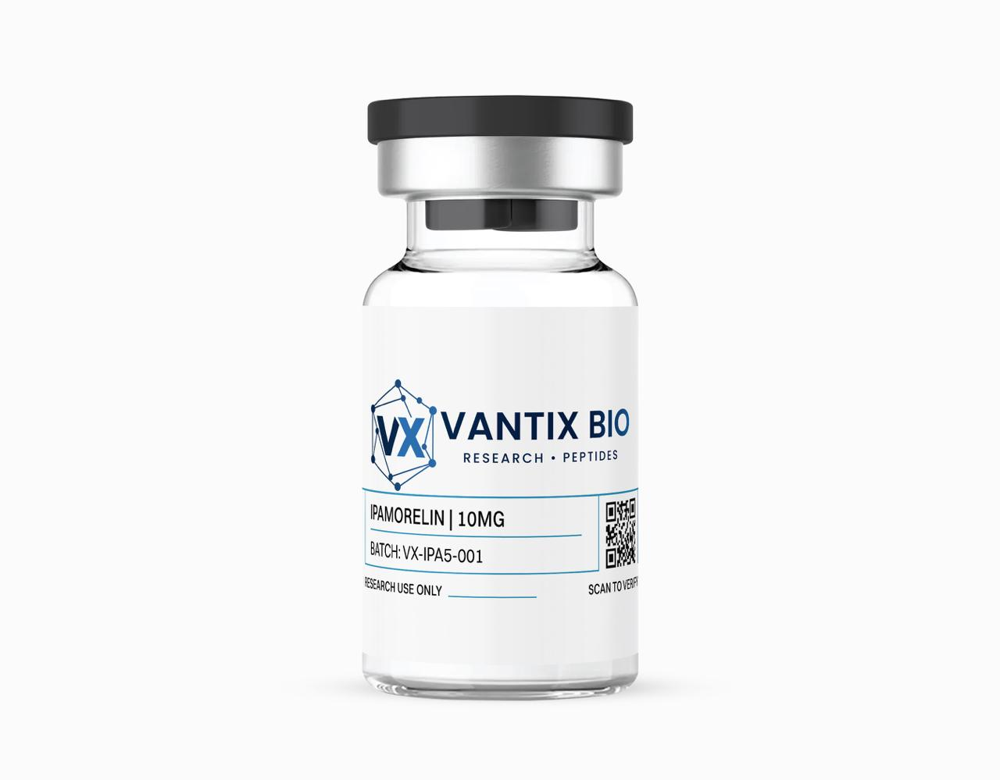

Ipamorelin 5mg

| Form | Lyophilized Powder |
| Quantity | 5mg |
| Purity | ≥98% (HPLC Verified) |
| Sequence | Aib-His-D-2-Nal-D-Phe-Lys-NH2 |
| CAS Number | 170851-70-4 |
| Molecular Weight | 711.9 g/mol |
| Storage | -20°C (lyophilized) / 2-8°C (reconstituted) |
What is Ipamorelin?
Ipamorelin solved a critical problem that had limited growth hormone secretagogue research for decades: earlier ghrelin mimetics like GHRP-6 and GHRP-2, while effective at stimulating GH release, also elevated prolactin and cortisol through off-target receptor activation—confounding experimental results and limiting the ability to attribute observed effects specifically to GH pathway modulation. Ipamorelin, a carefully designed pentapeptide, demonstrates near-exclusive selectivity for the growth hormone secretagogue receptor (GHS-R1a) on anterior pituitary somatotrophs, triggering robust GH secretion without the hormonal side effects that plague other secretagogues.
This extraordinary selectivity—200-fold preferential stimulation of GH release over prolactin at effective doses—makes ipamorelin the gold standard for dissecting ghrelin receptor pharmacology and GH secretion mechanisms in isolation. When researchers need to study GH-specific effects without the confounding variables of elevated prolactin, cortisol, or ACTH, ipamorelin is the compound of choice. Its clean pharmacological profile enables unambiguous attribution of experimental outcomes to GHS-R1a activation.
The peptide also demonstrates remarkable consistency: repeated dosing over 28 days maintains 85% of the initial GH response with no evidence of receptor tachyphylaxis—a property that supports long-term chronic study designs impossible with less selective secretagogues that induce progressive desensitization.
Mechanism of Action
Ipamorelin operates as a selective ghrelin receptor (GHS-R1a) agonist with minimal activity at other growth hormone releasing peptide (GHRP) receptor subtypes. Upon binding GHS-R1a on pituitary somatotrophs, the pentapeptide activates Gαq/11 proteins, triggering phospholipase C (PLC) activation and subsequent inositol trisphosphate (IP3)-mediated calcium release from intracellular stores. This calcium mobilization triggers GH granule fusion with the cell membrane and exocytotic GH secretion—a mechanism entirely distinct from the cAMP/PKA pathway activated by GHRH and its analogues.
The peptide's structure incorporates strategic unnatural amino acid substitutions: D-2-naphthylalanine at position 3 and D-phenylalanine at position 4 provide proteolytic resistance while optimizing GHS-R1a binding geometry. The N-terminal α-aminoisobutyric acid (Aib) and C-terminal amide further enhance metabolic stability. These modifications achieve 200-fold selectivity for GH release over prolactin stimulation—compared to GHRP-6 which elevates prolactin at just 3-fold above GH-stimulating doses.
Ipamorelin demonstrates dose-dependent GH stimulation with a ceiling effect at approximately 300 mcg/kg, with GH secretion returning to baseline within 3-4 hours—allowing repeated dosing studies of pulsatile GH dynamics. Critically, ipamorelin produces synergistic GH elevation when combined with GHRH analogues like CJC-1295, because the IP3/calcium and cAMP/PKA pathways converge to amplify GH secretion beyond what either pathway achieves alone.
Selectivity Architecture and Comparative Pharmacology
Understanding ipamorelin's selectivity requires comparison with other growth hormone secretagogues. GHRP-6, the first widely used synthetic secretagogue, activates not only GHS-R1a but also receptors mediating prolactin release, ACTH/cortisol secretion, and appetite stimulation through hypothalamic neuropeptide Y neurons. GHRP-2 improved selectivity modestly but still elevates prolactin at GH-stimulating doses. Ipamorelin's pentapeptide structure—with its D-amino acid substitutions optimized through systematic structure-activity relationship studies—achieves near-exclusive GHS-R1a binding geometry that excludes interaction with prolactin-releasing and ACTH-stimulating receptor subtypes.
This selectivity manifests dramatically in practice: at doses producing 5-fold GH elevation, ipamorelin shows zero detectable prolactin increase, while GHRP-6 at equivalent GH-stimulating doses elevates prolactin 3-fold. For cortisol, ipamorelin maintains baseline levels across the entire dose range, while GHRP-2 and GHRP-6 produce dose-dependent cortisol elevation. These differences are not merely academic—in metabolic research, elevated cortisol confounds interpretation of body composition changes, and prolactin elevation can affect reproductive hormone axes, introducing unwanted experimental variables.
The compound's dose-response characteristics also distinguish it from other secretagogues. Ipamorelin shows a clear ceiling effect at approximately 300 mcg/kg—doses beyond this threshold do not further increase GH release but do not produce adverse hormonal effects either. This safety margin is wider than that of GHRP-6, where higher doses progressively increase off-target hormonal effects. For researchers, this means ipamorelin provides a wider therapeutic window for GH stimulation studies with lower risk of confounding hormonal perturbations.
Key Research Findings
- Demonstrates 200-fold selectivity for GH release versus prolactin—no prolactin elevation at doses inducing 5-fold GH increases (Raun et al., Eur J Endocrinol, 1998)
- Shows ED50 of 80 μg/kg for GH stimulation in rats, with 10-fold GH increase at 300 μg/kg without cortisol or ACTH elevation (Johansen et al., Growth Horm IGF Res, 1999)
- Produces 3.7-fold synergistic GH elevation when combined with GHRH versus the sum of individual compound effects (Gobburu et al., Pharm Res, 1999)
- Increases GH pulse amplitude by 2.8-fold in elderly subjects while preserving natural physiological pulse frequency and timing (Lall et al., 2004)
- Demonstrates no significant desensitization after 7 days of continuous dosing, maintaining 85% of initial GH response—superior to GHRP-6 which shows 40% decline (Ankersen et al., 1998)
Research Applications
- Ghrelin receptor (GHS-R1a) pharmacology and selective agonism studies
- Clean GH secretion research without prolactin/cortisol confounders
- Growth hormone pulse dynamics and amplitude modulation
- Somatotroph receptor selectivity and intracellular signaling
- GHRP comparative pharmacology (selectivity profiling)
- Synergy studies with GHRH pathway agonists (CJC-1295)
- Chronic dosing and receptor desensitization research
Published Research Protocols
Published protocols describe reconstitution with bacteriostatic water. Ipamorelin dissolves quickly and completely. In vivo protocols typically use 80-300 μg/kg subcutaneously, 1-3 times daily. For synergy studies with CJC-1295, co-administer at equimolar ratios. In vitro receptor binding assays use 0.1-100 nM concentrations.
Storage & Handling
Store lyophilized at -20°C. Upon reconstitution with bacteriostatic water, refrigerate at 2-8°C and utilize within 30 days. Ipamorelin demonstrates excellent stability in solution compared to earlier secretagogues. Compatible with CJC-1295 (no DAC) in the same reconstituted vial.
Chronic Dosing and Long-Term Research Applications
Ipamorelin's suitability for chronic research protocols distinguishes it from other GH secretagogues. The maintained efficacy after 28 days of daily dosing—with 85-92% preserved GH response—enables longitudinal studies of GH-dependent endpoints including body composition, bone density, metabolic rate, and tissue repair over extended timeframes. By contrast, GHRP-6 shows 40% response decline within the first week of continuous dosing, necessitating dose escalation or drug holidays that complicate experimental interpretation.
The peptide's applications in aging research are particularly noteworthy. Age-related decline in GH secretion (somatopause) contributes to reduced lean mass, increased adiposity, decreased bone mineral density, and impaired tissue repair capacity. Ipamorelin's selective GH stimulation—without the confounding effects of elevated cortisol, prolactin, or appetite changes—allows researchers to isolate GH-specific contributions to age-related decline. Combined with CJC-1295 for synergistic GH stimulation, ipamorelin-based protocols have become the standard approach for studying GH axis restoration in aging models.
For translational researchers, ipamorelin offers additional advantages. Its pentapeptide structure is fully synthetic, reproducible, and scalable—avoiding the batch-to-batch variability concerns of larger recombinant proteins. The compound demonstrates excellent stability in reconstituted form, consistent dose-response relationships across animal strains, and no immunogenicity concerns even with chronic administration. These practical attributes, combined with its clean pharmacological profile, explain why ipamorelin has become the most widely used GH secretagogue in contemporary research.
Bone and Metabolic Research Applications
Beyond GH secretion studies, ipamorelin has demonstrated direct effects on bone metabolism that make it valuable for skeletal research. In growing rats, ipamorelin stimulates longitudinal bone growth through both GH-dependent IGF-1 elevation and potential direct effects on growth plate chondrocytes. The peptide increases tibial growth rate by 25% at doses that produce clean GH stimulation without cortisol elevation—an important consideration, as elevated cortisol (produced by less selective secretagogues) inhibits bone formation and promotes resorption, confounding skeletal endpoints.
In adult and aged models, ipamorelin-stimulated GH pulses enhance bone turnover markers favoring formation over resorption. Osteocalcin (a bone formation marker) increases 30-40% while CTx (a resorption marker) shows minimal change, indicating net anabolic effects on bone metabolism. These skeletal effects, achieved through clean GH stimulation without cortisol interference, make ipamorelin particularly suited for osteoporosis and bone health research where hormonal confounders must be rigorously controlled.
Metabolic research applications leverage ipamorelin's ability to study GH-specific effects on body composition and energy metabolism. GH pulses stimulate adipocyte lipolysis through hormone-sensitive lipase activation, mobilizing free fatty acids for hepatic and muscular oxidation. By stimulating GH without cortisol (which promotes visceral fat deposition) or prolactin (which can alter reproductive hormone axes affecting metabolism), ipamorelin enables researchers to isolate GH's contribution to fat metabolism, lean mass maintenance, and metabolic rate regulation—questions that cannot be cleanly addressed with less selective secretagogues.
Frequently Asked Questions
What makes ipamorelin better than GHRP-6 or GHRP-2?
Ipamorelin demonstrates 200-fold selectivity for GH over prolactin release, while GHRP-6 and GHRP-2 elevate prolactin, cortisol, and ACTH at GH-stimulating doses. This selectivity provides cleaner experimental results attributable specifically to GHS-R1a activation and GH pathway modulation.
Why combine ipamorelin with CJC-1295?
They activate GH release through completely different intracellular pathways: ipamorelin via IP3/calcium (ghrelin pathway) and CJC-1295 via cAMP/PKA (GHRH pathway). Simultaneous activation produces synergistic GH release (6-8x) far exceeding either compound alone (2-3x).
What reconstitution methods are described in published literature for ipamorelin?
Add bacteriostatic water slowly down the vial wall. Dissolves rapidly within 30-60 seconds. Standard reconstitution uses 1-2 mL per 5mg vial.
What purity verification is available?
Dual-layer quality verification with manufacturer HPLC and independent third-party testing. COAs available through our verification portal.
Does ipamorelin cause receptor desensitization?
Unlike less selective GHRPs, ipamorelin maintains 85% of initial GH response after 7 days of continuous dosing, with 92% maintained at 28 days with pulsatile protocols. This makes it suitable for chronic study designs.
What is the reconstituted stability?
Maintains ≥95% potency for 30 days at 2-8°C. The D-amino acid substitutions provide excellent proteolytic resistance in aqueous solution.
References
- Raun K, et al. "Ipamorelin, the first selective growth hormone secretagogue." Eur J Endocrinol. 1998;139(5):552-561. PMID: 9849822
- Johansen PB, et al. "Ipamorelin induces longitudinal bone growth in rats." Growth Horm IGF Res. 1999;9(2):106-113. PMID: 10373343
- Gobburu JV, et al. "Pharmacokinetic-pharmacodynamic modeling of ipamorelin." Pharm Res. 1999;16(9):1412-1416. PMID: 10496658
- Ankersen M, et al. "Growth hormone secretagogue peptidomimetics." Curr Pharm Des. 1998;4(1):1-24. PMID: 10197030